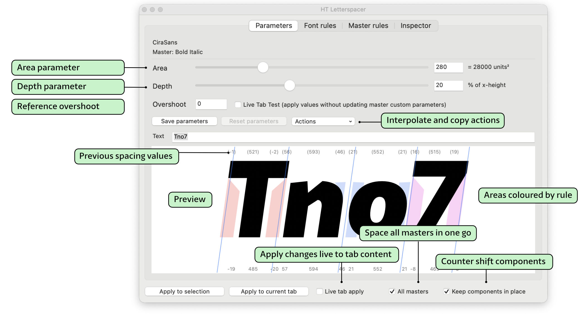
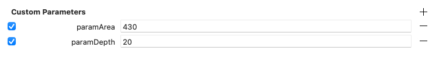
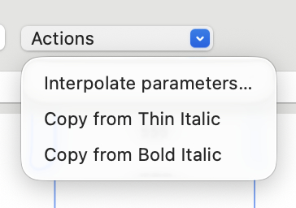
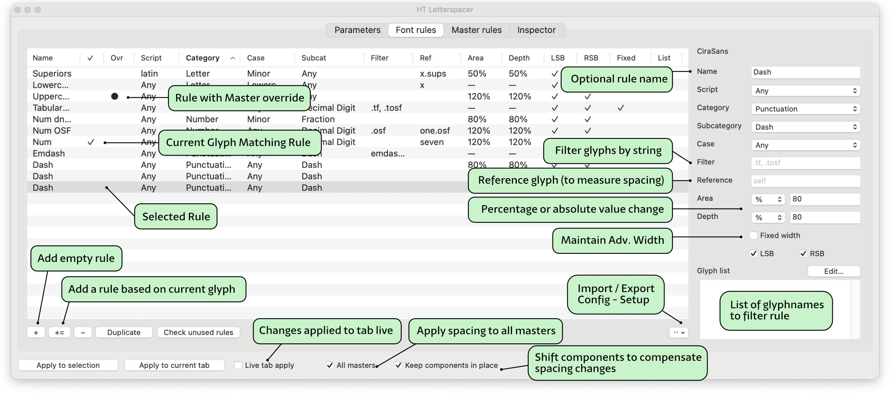
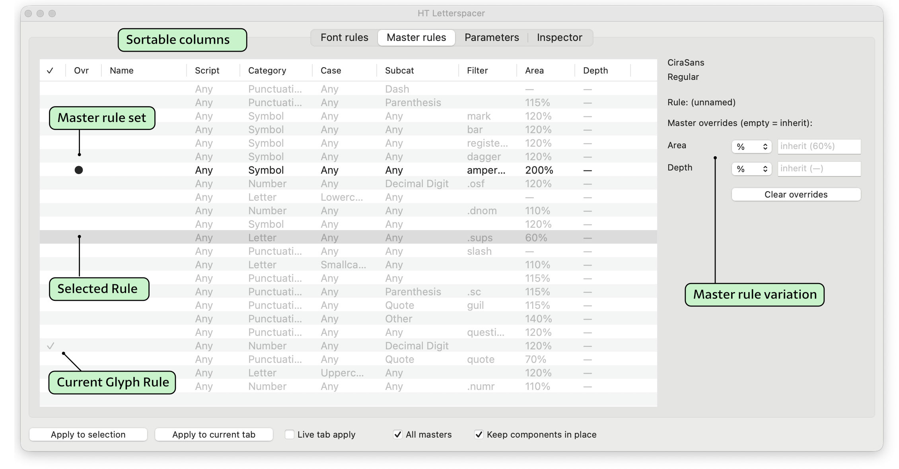
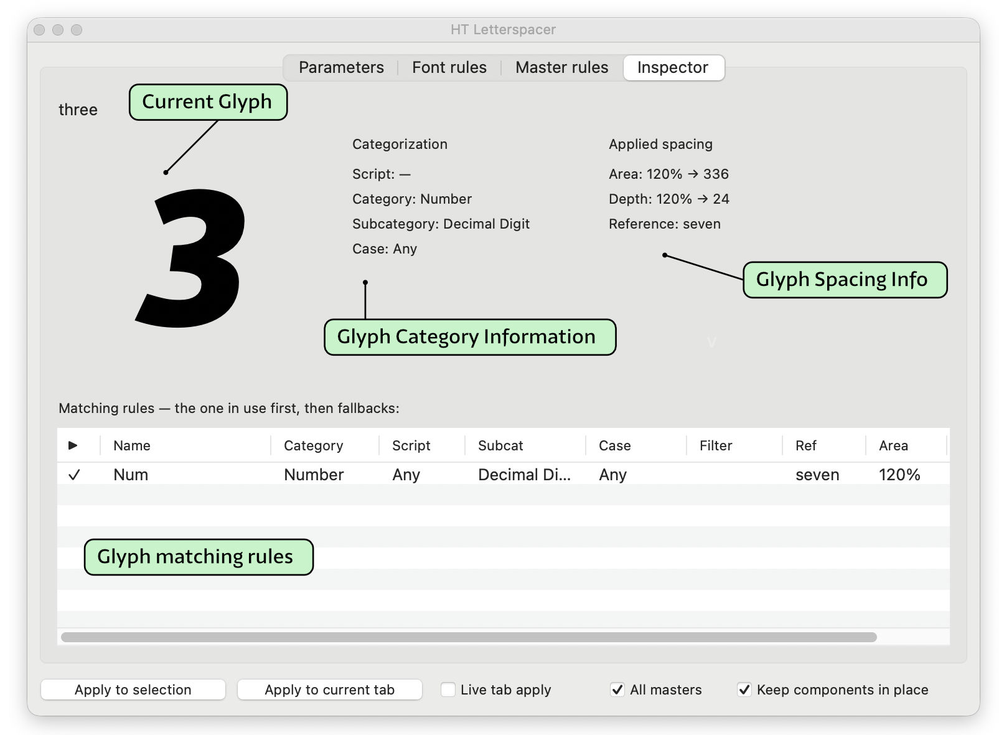
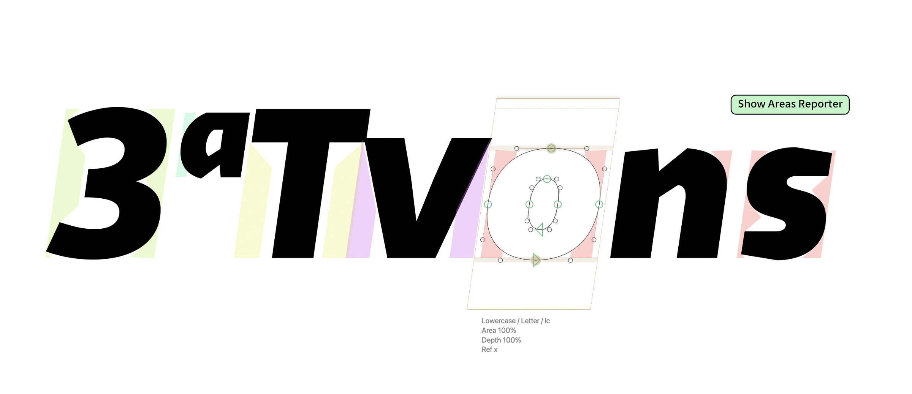
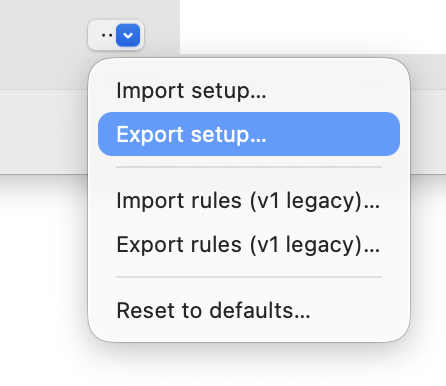

An amazing tool to have a well-done spacing in every step of a font project.Eduardo Tunni
It was very useful for defining Henderson. We made different spacings very quickly to decide the best one.Alejandro Paul
It is very easy to make different spacing tests and save a lot of time when you start a project.Pablo Impallari
Concepts
A method, not a magic button.
HT Letterspacer is a tool for spacing fonts that works on finished fonts as well as during development. Version 2.0 is a native plugin for Glyphs 3 and 4, with a full management UI. The method is adaptable to any editor or programming language.
With HT Letterspacer, achieving consistent spacing is easy because you can define fixed parameters during your type design process and focus on the letterform drawing.
By simplifying the spacing of a font, you can try different options quickly without going mad.
At present, HT Letterspacer doesn't kern — it is only for setting glyph widths and sidebearings.
So it replaces the type designer's craft?
No. You have to configure and use it in what you think is the best way. You still need to know what you are doing. The default configuration will produce a reasonable result for a beginner, but it does not replace the eye of a master type designer. To achieve excellent spacing, you need to carefully configure and use the tool. But achieving good results will be easier and faster.
What are the ideas behind it?
HT Letterspacer is a method for defining sidebearings based on the amount of white space or area in a glyph box, and it defines a way to measure it using three parameters per master. The parameters are set up for lowercase letters and modified by a configuration template for different groups of letters (using the glyph categories in Glyphs). The plugin stores these rules inside the font and lets you preview the spacing live in the edit view.
You can use the rules, where each category of glyphs has an Area and Depth that changes the parameters proportionally, or work by applying specific parameters manually to different groups of glyphs, on the fly. The more you put your eye and hand into the process, the more accurate the results.
It works with large families and many masters. If you've changed your mind late in the process, redesigning the spacing scheme of the entire typeface family is easy.
HT Letterspacer is a tool for type designers. There are no magic parameters, and each designer can run their own experiments to achieve different results.
Project history
Andrés Torresi is the initial and primary author of this tool. Soon after joining the postgraduate course in typeface design in Buenos Aires in 2009, he began research to find a simple, semi-automated method to set glyph sidebearings that could work at any moment during a project and that the type designer can control.
Today HT Letterspacer is the result of this research, and has been thoroughly tested by Andrés and Juan Pablo del Peral at the HT Fonts foundry, as well as by other designers on Latin, Greek, Cyrillic and Devanagari designs.
At ATypI 2015 in São Paulo, Andrés approached Dave Crossland to discuss ways of funding the project to make it available under the GPLv3 licence. The tool was used and tested privately by the Google Fonts team and finally released for free at ATypI 2016, with sources at github.com/huertatipografica/HTLetterspacer.
We want to thank Google for making it possible to open this up to the community.
Usage
Install & configure.
Version 2.0 is a native plugin for Glyphs 3 and 4 with its own window. Rules live inside your font, so there are no config files to manage.
How do I install HT Letterspacer?
If you have existing spacing setups (legacy .py / .yml config files, or
rules stored by HTLSManager), back up your .glyphs files and configs before applying
the new tool. Results may not match your previous spacing exactly, and migrating HTLSManager data is
a one-way step.
Requirements: Glyphs 3 or 4 with Python support enabled. HT Letterspacer 2.0 is not yet available through the Glyphs Plugin Manager, so it has to be downloaded from GitHub and installed manually, as described below. Restart Glyphs after installing any of the parts.
- Download the latest version from GitHub: HTLetterspacer-master.zip (or visit the repository), and unzip it.
- The plugin: double-click
HTLetterspacer.glyphsPluginand Glyphs will offer to install it. It appears as HT Letterspacer in the Glyph menu. - The reporter: double-click
HTLetterspacerPreview.glyphsReporterthe same way. It adds a live Show areas overlay to the View menu. Optional, but recommended. - The helper scripts (optional): copy the
HT Letterspacer Scriptsfolder into your Glyphs Scripts folder (Scripts / Open Scripts Folder), then reload the Scripts menu. They appear under Scripts / HT Letterspacer Scripts. - Restart Glyphs.
Tip: assign keyboard shortcuts to the plugin, the reporter toggle and the scripts in System Settings / Keyboard / Keyboard Shortcuts / App Shortcuts, using the exact menu titles.
Parameters
The Parameters tab edits the current master's base values with sliders and fields, and shows a live spacing preview: type any text to see it spaced with the working values, compared to the previous sidebearings. Save parameters writes them to the master; Live Tab Test auditions them on the current tab without saving.

They are stored as ordinary master custom parameters (Font Info / Masters), so you can also edit or copy them there.

paramArea · area between letters
The paramArea parameter lets you define how much area (measured in hundreds of units)
you want between the lowercase letters inside the x-height. A font suitable for text at 1000 UPM
typically uses a value between 200 and 400.
paramDepth · depth into open counters
The paramDepth parameter (measured relatively as a % of x-height) lets you define how
deep into open counterforms you want to measure the space, from the extreme points of each glyph to
its centre. This parameter affects rounded or open shapes.
A triangle with x-height (a circle, a c-shape or a T) has a long distance and a large amount of white from its extreme points or sides to the centre of the letter. Our eyes don't pay attention to the whole area, so the program doesn't either. You decide how much of this "big white" to measure by setting up this parameter.
Depending on the design, this value moves between 10 and 25 (per cent of x-height).
paramOver · vertical overshoot
The paramOver parameter expands the vertical range over which you measure the space,
above and below the shape, by a certain % of x-height. It lets you make slight differences when a sign
has outlines that exceed the height of its group of letters, typically ascenders or descenders.
For example, in a sans-serif font, a dotless /i/ and /l/ could have exactly the same shape between the baseline and the x-height. Setting an overshoot expands the range up and down and produces a different calculation of space for each sign. In this case, the sign with ascenders (the /l/) ends up with looser spacing.
This parameter is optional and depends on what you want to do with it, but it is intended to be used similarly to an overshoot.
An optional fourth parameter, paramFreq, sets the vertical measuring step in font units
(default 5), that is, how often the outline is sampled when measuring the area. It is not available in
the UI: if you need a different value, add it directly as a custom parameter in the master that
requires it (Font Info / Masters / Custom Parameters). The Parameters tab will then
display it.
- Lower it for more precision. This is rarely needed, typically only for masters with very thin strokes.
- Raise it for better performance at the cost of accuracy: fewer measurements make spacing, the reporter and the preview faster but coarser. Set it only on the masters where you want this trade-off.
The Actions menu can interpolate parameters between two other masters along an axis, or copy them from another master.

The plugin window
Open Glyph / HT Letterspacer. The window has four tabs — Font rules, Master rules, Parameters and Inspector — over a shared footer of spacing actions. Parameters are covered first, above, because the rules build on them.
The spacing rules stored in the font. Select a rule to edit it on the right. When more than one rule matches a glyph, the most specific one wins.

| Field | Description |
|---|---|
| Script / Category / Subcategory / Case | Glyphs' own classification (e.g. latin / Letter / Lowercase / smallCaps). Any means no constraint; a rule with everything on Any acts as the default. |
| Filter | Comma-separated name fragments, e.g. .tf, .tosf or .sc. The rule
matches glyphs whose name contains any of them. |
| Glyph list | An explicit list of glyph names. When filled, the rule applies only to those glyphs. |
| Area | The target white space per side. As a percentage it scales the master's Area (125% is 25% looser); as an absolute value it sets the area directly. |
| Depth | How far into open counters to measure, as a percentage of the master's Depth or an absolute value. |
| Reference | The glyph whose vertical range is the measuring zone (e.g. H for caps). Empty means
each glyph uses its own height. |
| LSB / RSB | Which sidebearings the rule may write. A side switched off keeps its current value. |
| Fixed width | Keeps the advance width constant and distributes the spacing inside it (tabular figures and the like). |
Per-master overrides of a rule's Area and/or Depth, for when one master needs different spacing from the family default. An empty field inherits the font rule.

A read-only readout for the selected glyph: its categorization, the resolved Area and Depth, and every rule that matches it, with the one in use marked first. Handy for understanding why a glyph is spaced the way it is.

Applying spacing
The footer controls decide what gets spaced and when:
- Apply to selection spaces the selected glyphs once, now.
- Apply to current tab does the same for every glyph in the Edit view.
- Live tab apply re-spaces the whole tab on every change to a rule or parameter, so you tune against real text. It writes to your glyphs, so turn it off when you're done.
- All masters expands every apply to all masters of each glyph.
- Keep components in place (on by default) shifts manually positioned components back when a base glyph is re-spaced, so accented letters and other composites stay put. Components with automatic alignment are left to Glyphs.
The Show areas reporter (View menu) draws each glyph's white area as a non-destructive overlay, tinted by the rule that matches it (grey when none does), so you can judge spacing visually without writing anything.

The reporter, live apply, All masters and Keep components all recompute continuously or in bulk. On long tabs or many-master families, use them a few glyphs at a time.
Helper scripts
Two optional scripts share the plugin's engine and the rules stored in the font. Find them under Scripts / HT Letterspacer Scripts.
- Apply HTLS Config spaces the current selection using the font's rules, with no UI, and prints a short report to the Macro panel.
- Apply HTLS Values is a floating window to apply manual Area / Depth / Overshoot / LSB / RSB / fixed-width values to the selection, independent of the stored rules. It can also copy the parameters to the clipboard as a custom-parameter snippet.
Sharing a configuration between fonts
The font is the single source of truth: spacing always reads the rules and parameters stored in the font, never a file on disk. Files are only for transfer and backup. The ⋯ menu in Font rules offers:

- Import / Export setup (recommended): a
.jsonfile with every rule, the per-master parameters and the per-master overrides. - Import / Export rules (v1 legacy): the old
.yml/.pyformat, for interchange with the original script and HTLSManager. It carries rules only and is lossy. - Reset to defaults replaces the font's rules with the built-in starter set.
Existing _autospace.yml / .py configs import through
Import rules (v1 legacy). Fonts spaced with HTLSManager are migrated to the new in-font
storage automatically the first time you save.
Looking for version 1?
The previous script-based version (v1.200) is still available for Glyphs 2 and 3 on GitHub: HT Letterspacer v1.200. Download it from the release page.
Version 1 works as a script rather than a plugin. It reads its rules from a configuration file placed
next to your Glyphs file (named like yourfontname_autospace.py or
yourfontname_autospace.yml) instead of storing them in the font, and it has a single
factor per rule instead of separate Area and Depth. The paramArea, paramDepth and paramOver master
parameters work the same way.
To install it, put the HTLetterspacer folder inside the Glyphs
Scripts folder (Scripts / Open Scripts Folder), restart Glyphs, and find it
under Scripts / HT Letterspacer. In Glyphs 3 you need Python, FontTools, RoboFab and
Vanilla installed in Window / Plugin Manager / Modules.
Glyphs 3 classifies characters differently from Glyphs 2, so config files generated in Glyphs 2 give inconsistent results in Glyphs 3. Delete the old config files and let the script regenerate them.
Existing v1 configs can be brought into version 2 with Import rules (v1 legacy).
Examples
See it in action.
You can download our example source files from our GitHub repository.
The Telder family's spacing was done around 98% with the tool, plus a small 2% of post-adjustment. The family was drawn in parallel with the development of the tool.
Open source
Made with the community, for the community.
We want this tool to be open and free, to receive feedback and improvements from other designers. Star it, fork it, send a pull request — or chip in to keep it going.